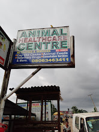
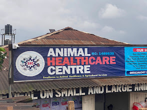

Mission
To make dependable animal healthcare products, poultry support and practical livestock knowledge accessible to farmers and pet owners.
Animal Healthcare Centre supports farmers, livestock owners and pet owners with products, practical knowledge and dependable service.
From poultry farmers buying chicks and feeds to pet owners seeking reliable care products, Animal Healthcare Centre brings essential animal health solutions closer to the people who need them.
Our work combines veterinary product knowledge, local market understanding and practical farm support. Customers visit for feeds, drugs, vaccines, supplements, pet products, farm tools and advice that helps them make better animal health decisions.


To make dependable animal healthcare products, poultry support and practical livestock knowledge accessible to farmers and pet owners.
To become a leading animal healthcare and agro-allied support brand trusted across Edo State and beyond.
Trust, practical expertise, customer care, animal welfare, product reliability and farmer profitability.
Animal Healthcare Centre becomes a visible resource for animal health products and farm support in Oka, Benin City.
The shop grows to serve poultry, pets, livestock and farm equipment needs under one roof.
Customers receive stronger guidance around poultry management, animal health and livestock education.
WhatsApp and social media channels make enquiries, booking and product ordering faster.



